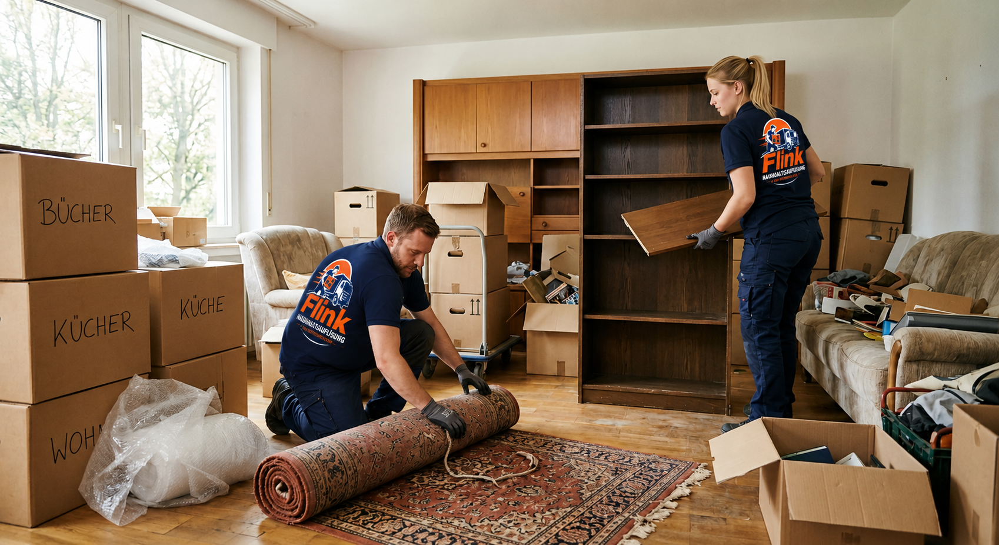
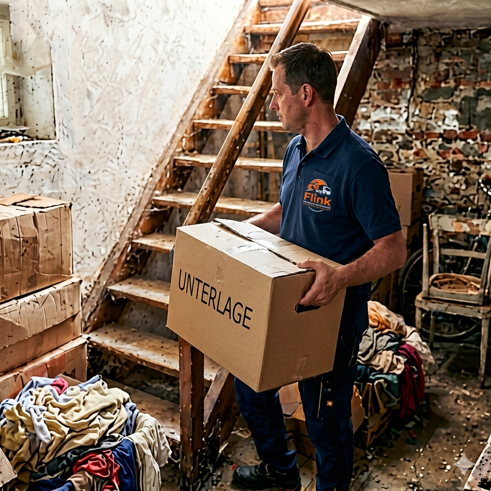
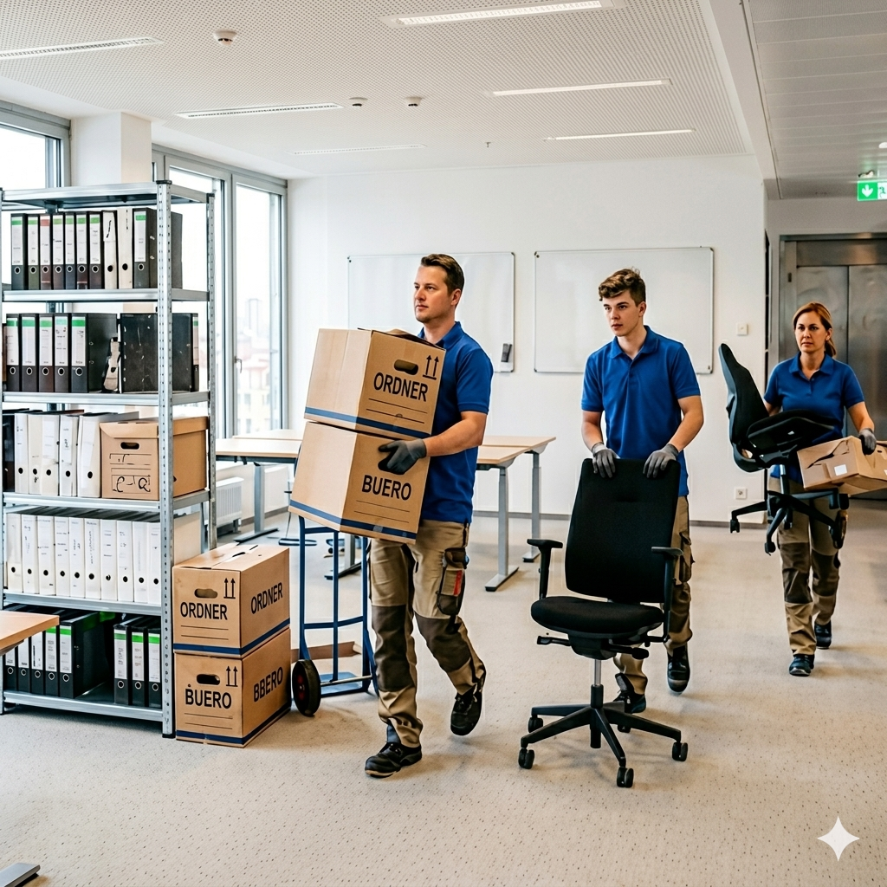

Professionelle Haushaltsauflösungen und Entrümpelungen
Jetzt Kontakt aufnehmen!Flink Haushaltsauflösung ist Ihr zuverlässiger Partner für schnelle, saubere und diskrete Haushaltsauflösungen, Entrümpelungen und Betriebsauflösungen. Wir arbeiten mit Festpreisen, bieten eine kostenlose Besichtigung an und übergeben jede Immobilie besenrein. Egal ob Wohnung, Keller, Dachboden, Garage oder Gewerbefläche – wir räumen alles professionell und termingerecht.
Wir bieten Ihnen ein breites Spektrum an professionellen Dienstleistungen rund um Haushaltsauflösungen, Entrümpelungen und gewerbliche Räumungen. Unser Team arbeitet schnell, zuverlässig und mit höchster Sorgfalt. Durch unsere Erfahrung können wir auch komplexe Fälle wie Messie-Wohnungen, Firmenauflösungen oder vollgestellte Keller effizient und strukturiert abwickeln.

Schnelle, professionelle und besenreine Haushaltsauflösungen in jeder Größe.

Keller, Dachboden, Garage oder komplette Wohnungen – wir räumen alles.

Auflösung von Büros, Werkstätten, Lagern und Gewerbeflächen – diskret & zuverlässig.
Wir kommen kostenlos vorbei und erstellen ein faires Festpreisangebot.
Wenn Sie eine zuverlässige, faire und professionelle Haushaltsauflösung suchen, sind Sie bei uns genau richtig. Wir arbeiten transparent, bieten Festpreise ohne versteckte Kosten und übernehmen alle Arbeiten von der Besichtigung bis zur besenreinen Übergabe. Durch unsere Wertanrechnung sparen Sie zusätzlich Geld – und wir kümmern uns um eine fachgerechte Entsorgung aller Materialien.
✔ Schnelle Termine: Wir kommen innerhalb von 24–48 Stunden zur kostenlosen Besichtigung.
✔ Faires Festpreisangebot: Keine versteckten Kosten – volle Transparenz.
✔ Besenreine Übergabe: Wir hinterlassen alles sauber und ordentlich.
✔ Wertanrechnung möglich: Wertvolle Gegenstände können den Preis reduzieren.
✔ Diskret & zuverlässig: Wir arbeiten professionell, leise und respektvoll.
✔ Gewerbe & Privat: Haushaltsauflösungen, Entrümpelungen und Betriebsauflösungen.
Flink Haushaltsauflösung – Ihr Partner für Haushaltsauflösungen, Entrümpelungen, Betriebsauflösungen und besenreine Übergaben. Wir arbeiten in der gesamten Region zuverlässig, schnell und mit fairen Festpreisen.